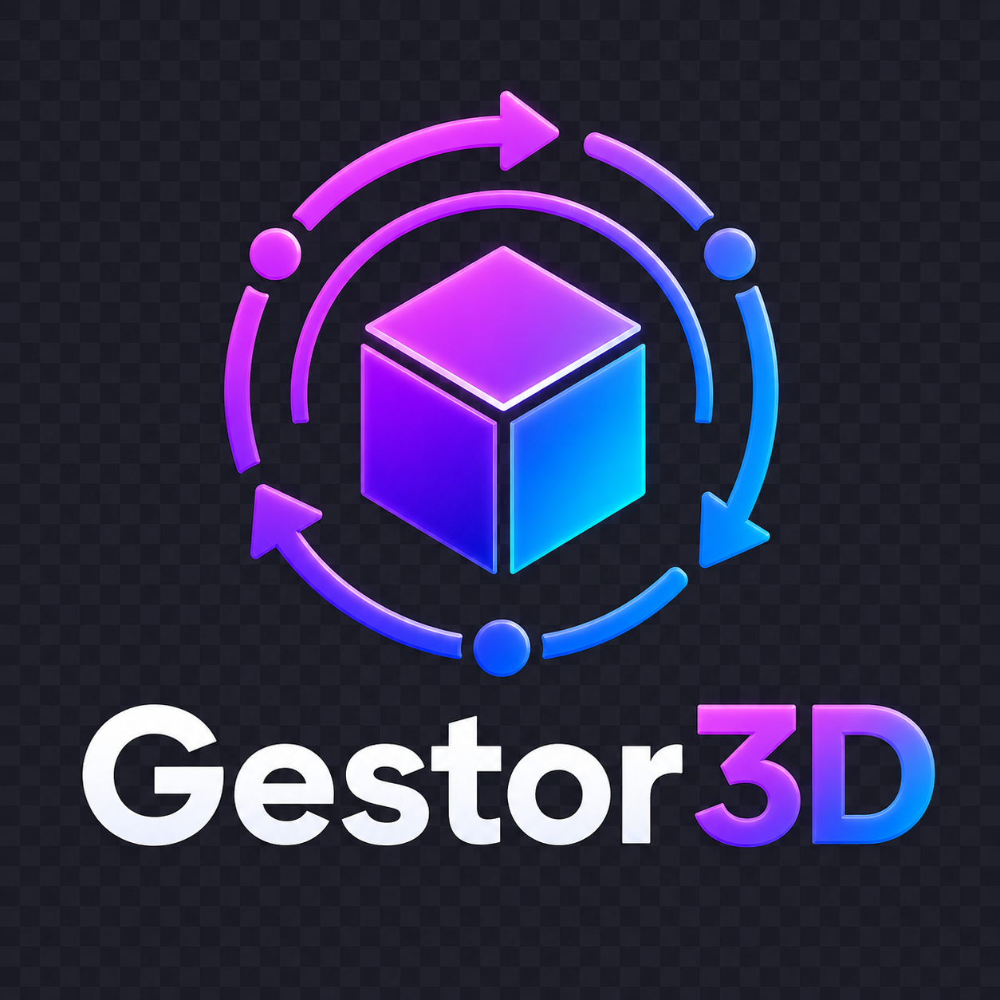

Gestor3D
Materiais organizados para apresentação comercial e consulta operacional do sistema.
AP
Apresentação
Material visual para demonstrar módulos, telas, diferenciais e próximos passos do Gestor3D.Abrir apresentação
MU
Manual de Uso
Site de documentação operacional com rotinas organizadas por segmento e passo a passo.Abrir manual